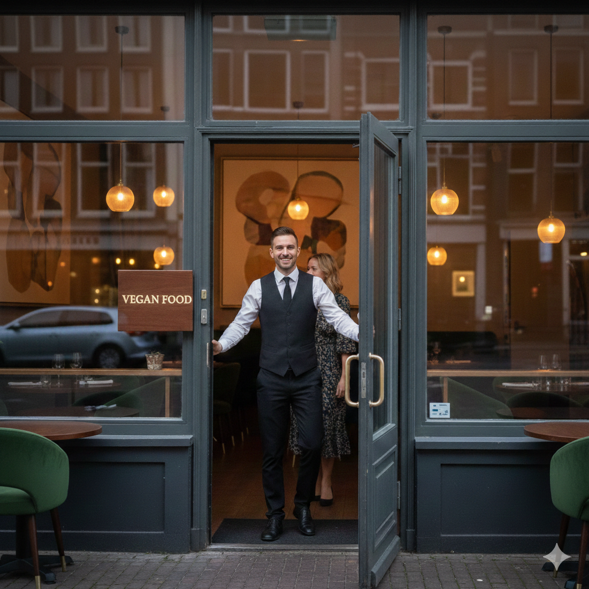

search
Openingstijd
ma: 17:00 - 22:00
di: 17:00 - 22:00
wo: 17:00 - 22:00
do: 17:00 - 22:00
vr: 17:00 - 22:00
za: 15:00 - 22:00
zo: 15:00 - 22:00

Locatie
Vegan Food Amsterdam keizersgrachts 212 1016DX Amsterdam